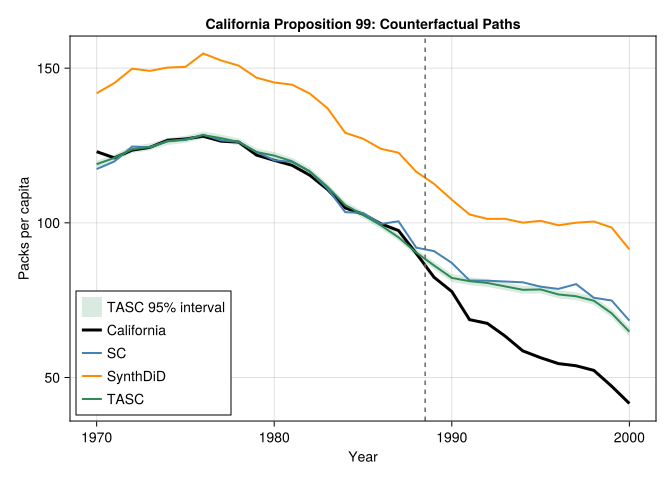

using DataFrames
using SynthDiD
using CairoMakie
using Statistics
using Printf
include("../../software/TASC.jl/src/TASC.jl")
using .TASC14 Synthetic Control, DiD, and TASC
Here I put three related panel-data designs together: classical synthetic control, synthetic DiD, and Time-Aware Synthetic Control (TASC). All compare a treated unit to a donor pool over time. They differ in what structure they put on the untreated counterfactual.
14.1 Synthetic Control
The biggest problem with DiD is the parallel trends assumption. There is not really a test for it, just like the unconfoundedness assumption. It is less demanding than unconfoundedness, but it is still hard to justify in many applications.
Synthetic control starts from a different idea. Instead of giving every control unit the same weight, it constructs a synthetic control unit from the donor pool:
\[ \hat Y_{1t}(0) = \sum_{i=2}^{N} \hat \omega_i Y_{it}, \]
where the weights are chosen to make the synthetic unit close to the treated unit before treatment. The usual Abadie-style version restricts the donor weights to be nonnegative and to sum to one. The identifying hope is not that the average control follows the treated unit, but that some weighted average of controls does.
Classical synthetic control is time-agnostic in an important sense: the pre-treatment periods enter the weight-fitting problem as a set of matching moments. If we permute the order of the pre-treatment periods, the fitted donor weights are unchanged. This is often a strength because it avoids imposing a time-series model, but it can leave predictive information unused when there is a stable trend.
14.2 Synthetic DiD
Arkhangelsky et al. (2021) combine the idea of DiD and synthetic control. Standard DiD assigns equal weight to all control units and all pre-treatment time periods. Synthetic control assigns data-driven weights to donor units. Synthetic DiD uses both unit weights and time weights.
The DiD objective can be written as
\[ \small (\hat \tau^{did}, \hat \mu, \hat \alpha, \hat \beta) = \underset{\tau, \mu, \alpha, \beta}{\arg\min} \sum_{i=1}^N \sum_{t=1}^T (Y_{it} - \mu - \alpha_i - \beta_t - W_{it}\tau)^2. \]
Synthetic control can be viewed as a weighted version that puts the donor weights into the comparison:
\[ \small (\hat \tau^{sc}, \hat \mu, \hat \beta) = \underset{\tau, \mu, \beta}{\arg\min} \sum_{i=1}^N \sum_{t=1}^T (Y_{it} - \mu - \beta_t - W_{it}\tau)^2 \hat \omega_i^{sc}. \]
Synthetic DiD adds time weights:
\[ \small (\hat \tau^{sdid}, \hat \mu, \hat \alpha, \hat \beta) = \underset{\tau, \mu, \alpha, \beta}{\arg\min} \sum_{i=1}^N \sum_{t=1}^T (Y_{it} - \mu - \alpha_i - \beta_t - W_{it}\tau)^2 \hat \omega_i^{sdid}\hat \lambda_t^{sdid}. \]
The unit weights try to make the donor pool look like the treated unit. The time weights put more emphasis on pre-treatment periods that are more informative about the post-treatment period.
14.3 Time-Aware Synthetic Control
TASC was proposed by Rho et al. (2026). It starts from the same panel-data structure, but it models the donor and treated outcomes through a latent time-series system:
\[ x_t = A x_{t-1} + q_t,\qquad q_t \sim N(0,Q), \]
\[ y_t = Hx_t + r_t,\qquad r_t \sim N(0,R). \]
Here \(y_t\) is the vector of outcomes across units at time \(t\), and \(x_t\) is a low-dimensional latent state. The matrix \(H\) maps the latent state into unit outcomes, so \(HX\) is a low-rank signal. The matrix \(A\) is the new piece relative to classical synthetic control: it says that the latent time factors evolve according to a stable trend.
The counterfactual step is simple. TASC learns the state-space model from the pre-treatment panel. After treatment, the treated unit’s observed outcome is treated as missing. The filter and smoother continue to use the donor units to infer the latent state, and the treated row of \(H\) maps that state into the untreated counterfactual:
\[ \hat Y_{1t}(0) = h_1^\top \hat x_t,\qquad t > T_0. \]
The estimated treatment effect is then
\[ \hat \tau_t = Y_{1t} - \hat Y_{1t}(0). \]
Relative to classical synthetic control, TASC uses the order of time. Relative to synthetic DiD, it puts the time dependence in a generative latent-state model rather than in a set of pre-period weights. This can help when trends are stable and outcomes are noisy, but it is also a stronger modeling assumption.
14.4 Example: California Proposition 99
California’s Proposition 99 raised cigarette taxes and funded anti-smoking programs. The usual synthetic-control exercise compares California’s cigarette sales after 1988 to a donor pool of other states. The outcome is per-capita cigarette sales in packs.
california = california_prop99()
setup = panel_matrices(california, :State, :Year, :PacksPerCapita, :treated)
tau_sdid = synthdid_estimate(setup.Y, setup.N0, setup.T0)
tau_sc = sc_estimate(setup.Y, setup.N0, setup.T0)
tau_did = did_estimate(setup.Y, setup.N0, setup.T0)
nothingSynthDiD.jl orders the donor states first and treated states last. TASC.jl expects the treated unit to be first, so we explicitly reorder the matrix before fitting the state-space model. The paper’s Proposition 99 example uses a low latent dimension; here we set d = 2.
Y_tasc = vcat(setup.Y[(setup.N0 + 1):end, :], setup.Y[1:setup.N0, :])
tasc_model = fit_tasc(
Y_tasc;
d = 2,
T0 = setup.T0,
n_em = 200,
tol = 1e-3,
)
tasc_pred = predict_counterfactual(tasc_model, Y_tasc)
tasc_att = mean(tasc_pred.effect[(setup.T0 + 1):end])
nothingestimates = DataFrame(
Method = ["Diff-in-Diff", "Synthetic Control", "Synthetic Diff-in-Diff", "TASC"],
Estimate = [tau_did.estimate, tau_sc.estimate, tau_sdid.estimate, tasc_att],
)
DataFrames.transform(estimates, :Estimate => ByRow(x -> round(x, digits = 2)) => :EstimateRounded)4×3 DataFrame
| Row | Method | Estimate | EstimateRounded |
|---|---|---|---|
| String | Float64 | Float64 | |
| 1 | Diff-in-Diff | -27.3491 | -27.35 |
| 2 | Synthetic Control | -19.6197 | -19.62 |
| 3 | Synthetic Diff-in-Diff | -15.6038 | -15.6 |
| 4 | TASC | -17.1127 | -17.11 |
The estimates are all negative: California’s observed cigarette sales fell below the estimated no-Proposition-99 counterfactual. The methods differ because they impose different restrictions on the untreated path. DiD compares average changes. Synthetic control chooses donor weights. Synthetic DiD adds time weights. TASC uses a low-rank state-space model and updates the latent state with post-treatment donor observations.
years = Int.(setup.times)
treated = vec(setup.Y[(setup.N0 + 1), :])
sc_counterfactual = vec(tau_sc.weights.omega' * setup.Y[1:setup.N0, :])
sdid_counterfactual = vec(tau_sdid.weights.omega' * setup.Y[1:setup.N0, :])
tasc_counterfactual = tasc_pred.target
tasc_se = sqrt.(max.(tasc_pred.variance, 0.0))
tasc_lower = tasc_counterfactual .- 1.96 .* tasc_se
tasc_upper = tasc_counterfactual .+ 1.96 .* tasc_se
fig = Figure(size = (760, 430))
ax = Axis(
fig[1, 1],
xlabel = "Year",
ylabel = "Packs per capita",
title = "California Proposition 99: Counterfactual Paths",
)
band!(ax, years, tasc_lower, tasc_upper, color = (:seagreen, 0.18), label = "TASC 95% interval")
lines!(ax, years, treated, color = :black, linewidth = 3, label = "California")
lines!(ax, years, sc_counterfactual, color = :steelblue, linewidth = 2, label = "SC")
lines!(ax, years, sdid_counterfactual, color = :darkorange, linewidth = 2, label = "SynthDiD")
lines!(ax, years, tasc_counterfactual, color = :seagreen, linewidth = 2, label = "TASC")
vlines!(ax, years[setup.T0] + 0.5, color = :gray40, linestyle = :dash)
axislegend(ax, position = :lb)
fig
The figure emphasizes where the counterfactual enters. After 1988, the black line is observed California. The colored lines are estimates of California’s untreated path. The treatment-effect path is the vertical gap between the black line and each counterfactual.